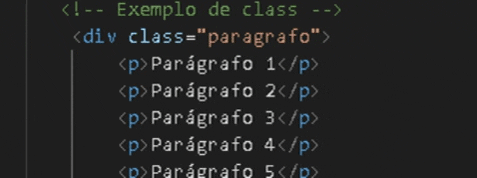
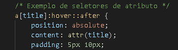
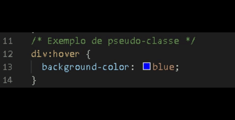
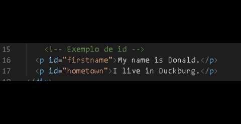
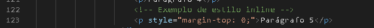

Cada seletor tem um determinado peso e, quando um elemento tem estilos que se conflitam o navegador aplica o estilo que ganha em especificidade, ou seja, o símbolo que tem prioridade acaba sendo o formatado, por ordem de prioridade.
| Seletores | Exemplos | Peso |
|---|---|---|
| Seletores Universais |
*
|
Peso mais baixo |
| Seletores de tipo |
P
|
Peso mais baixo |
| Seletores de Classes | Class | Peso baixo |
| Seletores de Atributo | type= number | Peso baixo |
| Pseudo-Classes | :hover | Peso baixo |
| Seletores de ID | id | Peso médio |
| Estilo inline | Inline | Peso alto |
| Comprendendo a apontuação | ||
|---|---|---|
| Seletor | Pontuação | Descrição |
| div ul li a | 0,0,0,4 | 4 elementos, 4 pontos na primeira casa |
| div.content ul li | 0,0,1,3 | Uma classe vale um ponto na segunda casa. Mais 3 elementos, mais 3 pontos na primeira casa |
| a:hover> | 0,0,1,1 | Um elemento, um ponto na primeira casa. Mais uma pseudo-classe, que equivale a uma classe e logo ganha um ponto na segunda casa. |
| div.menu a:hover | 0,0,2,2 | Dois elementos, dois pontos na primeira casa. Mais uma classe e uma pseudo-classe, mais dois pontos na segunda casa. |
| #content p | 0,1,0,1 | Um ID equivale a um ponto na terceira casa. Mais um elemento, que equivale a um ponto na primeira casa. |
| article#content p | 0,1,0,2 | Dois elementos, dois pontos na primeira casa. Um ID, um ponto na terceira casa. |
DESENVOLVIMENTO DE SISTEMAS - PWI
EMILY DOS SANTOS CARDOSO
JULYANE PEREIRA HENGLER